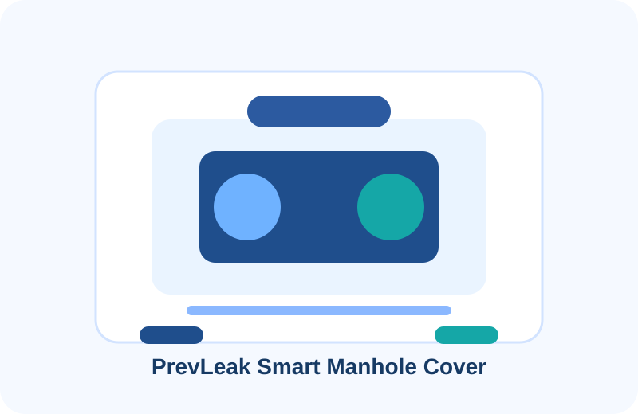
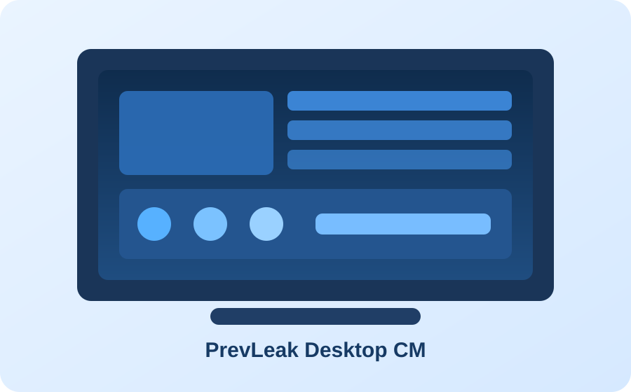

What the platform does
It detects incidents, tracks cover status, reports tampering or flooding, and gives field staff a fast path to verify events and coordinate action.

Mother platform • Smart manhole covers • Water and sanitation operations
PrevLeak is the mother platform for smart manhole covers, sewer monitoring, public infrastructure response, and service coordination. It combines connected hardware, digital reporting, field workflows, and municipal decision support into one credible operating layer.
It detects incidents, tracks cover status, reports tampering or flooding, and gives field staff a fast path to verify events and coordinate action.
It creates a defensible digital record for service delivery, compliance, accountability, and long-term planning across water and sanitation operations.
Incident reporting, asset operations, maintenance scheduling, Desktop CM command monitoring, audit trails, predictive oversight, and public-facing transparency dashboards.
The combined system turns raw field events and public reports into usable insight for better decisions. It helps reduce repeated failures, improves response quality, and strengthens performance oversight for municipalities and utilities.
Store listings will go live once Android and iOS registrations are finalised. The web experience and direct Android bundle are available now.

The app is fully built and ready. Store listings will be activated once Android and iOS registrations are finalised.
Commercial action center
The PrevLeak model connects hardware, field apps, and reporting intelligence into one branded operating system that moves quickly from pilot proof to full contract deployment.